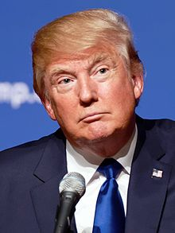

Trump was born on June 14, 1946, in Jamaica, Queens, a neighborhood in New York City.He was the second youngest child of five children. Of his four siblings, three are living: Maryanne, Elizabeth, and Robert. Trump's older brother Fred Jr. died in 1981 from alcoholism, which Trump says led him to never drink alcohol or smoke cigarettes.
Trump is of German ancestry on his father's side and Scottish ancestry on his mother's side; all four of his grandparents were born in Europe. His father Fred Trump (1905–1999) was born in Queens to parents from Kallstadt, Germany, and became one of the biggest real estate developers in New York City.His mother, Mary Trump (née MacLeod, 1912–2000), was born in Tong, Lewis, Scotland.Fred and Mary met in New York and married in 1936, settling together in Queens. His uncle John G. Trump, a professor at Massachusetts Institute of Technology from 1936 to 1973, was involved in radar research for the Allies in the Second World War, helped design X-ray machines that provided additional years of life to cancer patients, and in 1943, the Federal Bureau of Investigation requested him to examine Nikola Tesla's papers and equipment when Tesla died in his room at the New Yorker Hotel.Trumps' grandfather was Frederick Trump who amassed a fortune operating boom-town restaurants and boarding houses in the region of Seattle and Klondike, Canada.
The Trump family were originally Lutherans, but Trump's parents belonged to the Reformed Church in America. The family name was formerly spelled Drumpf or Drumpft, and later evolved to Trump during the Thirty Years' War in the 17th century. Trump has said that he is proud of his German heritage; he served as grand marshal of the 1999 German-American Steuben Parade in New York City.
The family had a two-story Tudor Revival home on Midland Parkway in Jamaica Estates, where Trump lived while attending The Kew-Forest School.Trump left the school at age 13 and was enrolled in the New York Military Academy (NYMA), in Cornwall, New York where he finished eighth grade and high school. In 1983, Fred Trump told an interviewer that Donald "was a pretty rough fellow when he was small." Trump participated in marching drills, wore a uniform, and during his senior year attained the rank of captain. He was transferred from a student command position after the alleged hazing of a new freshman in his barracks by one of Trump's subordinates; Trump describes the transfer as "a promotion". In 2015, he told a biographer that NYMA gave him "more training militarily than a lot of the guys that go into the military".
Trump attended Fordham University in the Bronx for two years, beginning in August 1964. He then transferred to the Wharton School at the University of Pennsylvania, which offered one of the few real estate studies departments in United States academia at the time.While there, he worked at the family's company, Elizabeth Trump & Son, named for his paternal grandmother.[24] Trump graduated from Wharton in May 1968 with a Bachelor of Science in Economics.
Trump was not drafted during the Vietnam War. While in college from 1964 to 1968, he obtained four student deferments. In 1966, he was deemed fit for service based upon a military medical examination, and in 1968 was briefly classified as fit by a local draft board, but was given a 1-Y medical deferment in October 1968. In an interview for a 2015 biography, Trump attributed his medical deferment to heel spurs. In December 1969 Trump received a high number in the draft lottery, which would also have exempted him from service.
An analysis of Trump's business career by The Economist in 2016, concludes that his "...performance [from 1985 to 2016] has been mediocre compared with the stock market and property in New York", noting both his successes and bankruptcies. A subsequent analysis by The Washington Post, whose reporters were denied press credentials by the Trump presidential campaign, concluded that "Trump is a mix of braggadocio, business failures, and real success."
Prior to graduating from college, Trump began his real estate career at his father, Fred Trump's company, Elizabeth Trump and Son, which focused on middle-class rental housing in the New York City boroughs of Brooklyn, Queens, and Staten Island. During his undergraduate study, Fred and Donald Trump used a $500,000 investment to successfully reopen the foreclosed Swifton Village apartment complex in Cincinnati, Ohio.
He was given control of the company in 1971 and, in one of his first acts, renamed it to The Trump Organization He became the president of the organization in 1973. That year, he and his father drew wider attention when the Justice Department alleged that they were discriminating against blacks who wanted to rent apartments, rather than merely screening out people based on low income as the Trumps stated. An agreement was later signed in which the Trumps made no admission of wrongdoing, and under which qualified minority applicants would be presented by the Urban League.
Trump's first big deal in Manhattan was the remodeling of the Grand Hyatt Hotel in 1978 next to Grand Central Terminal from an older Commodore Hotel, which was largely funded by a $70 million construction loan jointly guaranteed by Fred Trump and the Hyatt hotel chain.